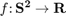

S2Fun
The S2Fun toolbox is a collection of Matlab classes for numerical computation with functions on the two-dimensional sphere. It overloads the default commands for vectors and matrices to compute the analogous operations for functions of the given type. For example the product becomes the pointwise product of two functions. Likewise the min command finds local minima.
The underlying mathematical approach is accomplished via spherical harmonics which form an orthonormal basis of the square-integrable functions on the two-dimensional sphere. Internally for a function  only the corresponding Fourier-coefficients are stored.
| DocHelp 0.1 beta |